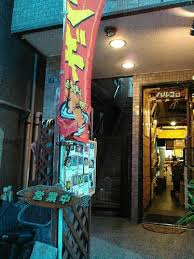
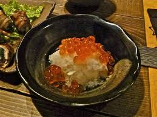
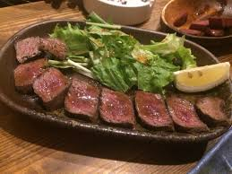
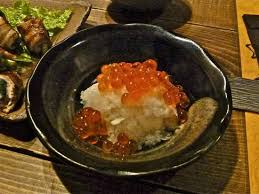
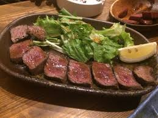

ハルコロ

本州には1軒しかないというアイヌ民族料理レストラン。
新大久保でひっそり佇む隠れ家的なお店です。
名物のえぞ鹿のステーキの他、キトピロ、シケレベ、氷下魚など聞き慣れない食材や調理法で、
北海道が誇る自然の恵みやアイヌの一風変わった魅力を堪能できます。
 



- 営業時間
平日11:30～14:00 / 17:00～24:00（ラストオーダー 23:00）
土日・祝日：17:00～24:00（ラストオーダー 23:00） - 座席数：19席
- 予算：￥2,000～￥3,000
- 駐車場:無し